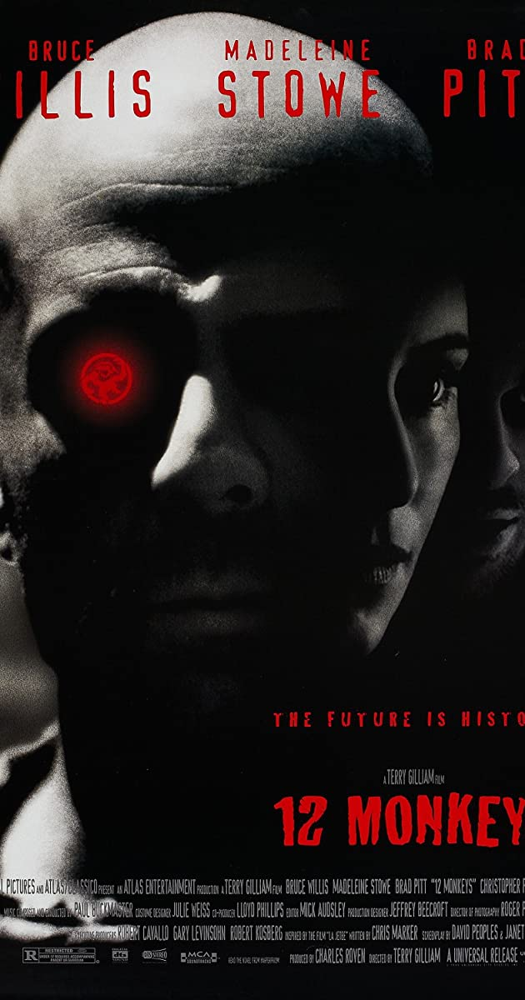
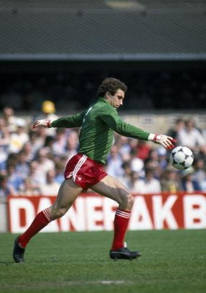
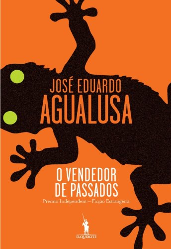

O dia em que meu pai virou uma lenda
14 de Maio, 2021
Macaquinhos e arquivos corrompidos
Ontem, eu estava assistindo o jogo do Galo com o América de Cali. Veja só, assistindo via facebook live events... Tempos modernos. Por sinal, o live streaming do facebook, que não é uma empresa focada na transmissão de eventos desportivos ao vivo, é infinitamente superior ao Premier Play da Globo, detentora dos direitos do Campeonato Mineiro e do Campeonato Brasileiro, por exemplo. Se você for acionista da Globo e ainda não tiver percebido o que está rolando... melhor vender já...
Assim como irá ocorrer neste texto, existe na minha cabeça um fluxo constante de pensamentos aleatórios parcamente conectados. Pense na sina do Homer Simpson com um macaquinho dentro de sua cabeça.
Depois de assistir a clássica distopia sci-fi sobre o 12-Army Monkeys, minha mulher se refere a essa comportamento como os "12 macacaquinhos". De acordo com ela, eu tenho 12 macaquinhos desse do Homer. Quando ela está falando e eu começo a viajar, ela diz: "Os macacaquinho tão tocando o terror aí, né? Nada pro raso, Pedro".
Bom, nadando pro raso... Em meio ao jogo do Galo, protestos na Colômbia, gás de pimenta quase inviabilizando a partida, algum dos macacaquinhos decidiu acessar o file systems do meu cérebro e buscar pela pasta de memórias.
Meu sistema operacional tem arquivos corrompidos e datas pouco confiáveis, mas a lembrança que irei descrever abaixo rolou por volta de 2004. Naquela época, o sabádo de manhã tinha um compromisso inegociável: ir para o clube com minha família. Como bons mineiros e tendo comportamento em relação ao clube de forma simétrica à praia, até na chuva (ou semi-chuva) a gente ia, rs. Se outro arquivo corrompido do meu cérebro não estiver falho, acho que minha mãe me ensinou ping-pong exatamente num dia chuvoso.
Uma manhã especial no country
Normalmente, a gente treinava chutes por enquanto meu pai ia no gol. Contudo, houve um dia diferente. O clube estava cheio, inclusive, com direito a times inteiros reservas . Naquela época, existia uma espécie de animadores-de-crianças, funcionários do clube que entretiam as crianças que não tinham pais tão legais quanto os meus.
Diferentemente do Liminha do Programa do Gugu, esses animadores usavam um colete laranja. Ainda assim, a persona era semelhante. Um deles teve a grande ideia de organizar um campeonatinho. Ou, campeonatin' em bom mineirês. Os times se enfrentariam num turno único de pontos corridos e, ao final dos confrontos, sairia um time campeão. Esse nível de organização de competição era raro.
Foram definidos os capitães e meu pai foi um deles. Além dele, os animadores-organizadores-de-gincana e os garotos mais habilidosos também foram definidos como capitães.
De início, já parecia uma desvantagem ser do time do meu pai. Afinal, ele já tinha por volta 45 anos. Para você ter ideia, o segundo cara mais velho, depois do meu pai, devia ter uns 20 e poucos e a média de idade convergia para uns 13 anos. Ou seja, ele era bem mais velho que o pessoal.
Reforço para (não) buscar no aeroporto
Cada capitão escolheria um membro pro seu time. No adedanha, ficou definido que meu pai seria o primeiro a escolher. Nesse draft da NFL made in BH, meu pai tinha uma grande vantagem, já que existia uma grande variância de qualidade entre os garotos: quem chega primeiro bebe a água limpa.
Antes do campeonatin' rolar, havia existido um "aquecimento pre-match" com chutes a gol, embaixadinhas e etc. Dava para ter uma estimativa do nível de cada um.
Eu ainda sou ingênuo, mas, quando mais jovem, eu era ainda mais incauto. Inicialmente, eu me lembro de pensar: "Caramba, não é possível que meu pai vai me escolher, ele tem muitos data points, a gente 'treina' todo sábado e ele sabe o quão ruim eu sou, vamos levar o 'campeonatin' a sério, poxa".
Ao mesmo tempo, vendo o brilho no olho do coroa por poder ser o primeiro a escolher e com aquele sorrisinho típico dele de quem está prestes a bater o jogo no buraco, meu pensamento mudou, eu sabia quem ele ia escolher. Sim, ele me escolheu: "sabia que ele ia fazer isso, ele é f&#@!..."
Além de parecer uma estratégia ruim, existia o desconforto da minha parte com o "mico" de ter escolhido pelo meu pai. Caso o leitor tenha idade avançada e os tempos de pré-adolescente estejam muito distantes, é bom lembrar que parte do ethos pré-adolescente/adolescente dos anos 2000 consistia em fingir, bizarramente, que seus pais não existiam. No meu caso, ele não só existia como fazia questão de escolher o filho ruim tendo outras opções - e com um sorriso no rosto (rsrs).
A vez foi passada para os outros capitães. Claramente, eles faziam escolhas melhores que meu pai havia feito. Enquanto isso, eu pudia sentir certa ansiedade nele. Com aquela poker face típica dele achando que engana alguém, ele olhava pro meu irmão caçula a cada decisão com certa tensão. Tá bom, pai... Vamos fingir que os capitães não sacaram...
Eu podia sentir a próxima tacada de "gênio". Meu pai podia ter ficado mais tranquilo nessa segunda rodada, afinal, ninguém escolheria meu irmão caçula naquele momento.
Ele é 17 meses mais novo e, calibrando um modelo comparativo ajustando pela a idade, acho que nós éramos equivalentemente ruins, rs. Como ele era mais novo do que eu e essa comparação foi feita num período da vida em que 17 meses fazem muita diferença (até de altura), meu irmão era ainda mais desprovido da habilidade de coordenação motora com la pelota.
Advinha quem o chefe o escolheu na vez dele? Sim, meu irmão. Previsível.
Se não me falha a memória, meu irmão olhou para o chão envergonhado. Acho que ele estava suplicando: "Pai, por favor...". Eu olhei pro chão envergonhado. Provavelmente, as outras crianças sentiram compaixão, rs.
Depois dessa, o time já estava semi-formado. Ainda faltava mais um "craque" pro nosso time de 4 membros.
Um mundo à parte
Àquela altura, eu só conseguia pensar que aquele seria mais um dia de humilhação na minha vidinha de pré-adolescente. Afinal, nessa época, eu estudava num colégio com uma dinâmica social semelhante aos High School americanos que vemos nos filmes de Hollywood.
Ninguém me prendia em armário e nem roubavam meu dinheiro do lanche, mas o ranqueamento por popularidade e otimizações comportamentais em torno dele existiam de forma clara. Nesse contexto, eu era da penúltima casta na pirâmide social do colégio, fazia parte do estamento dos soft nerds.
Embaixo de mim só existiam o grupo dos deficientes físicos e dos hard nerds, aqueles caras que jogavam xadrez no recreio. Eu até tinha vontade de jogar xadrez às vezes, mas meu instinto de auto-sobrevivência me impedia. Os hard nerds já tinham desistido totalmente do jogo da popularidade. Eles estavam certos, por sinal... Naquela realidade artificial e vazia dos modismos e superficialidades pré-adolescentes, eles eram os mais lúcidos.
Acima de mim, estavam as pessoas que eram convidadas para a maioria das festas, ainda que não fossem protagonistas. Além disso, o pessoal bonito e que era parte da equipe de competição em algum esporte do colégio.
No topo da pirâmide social do Colégio Magnum estavam os caras do time de futsal e as cheerleaders. Quer dizer, não tinham cheerleaders. Mas, todo mundo sabia quem elas seriam se houvesse. Nem precisava ter. Quanto aos caras do futsal, talvez eles merecessem verdadeira admiração. Alguns viraram jogadores profissionais, um deles virou goleiro do AC Milan, acredite se quiser.
Identidade tabajara
De volta ao causo... Depois dessa digressão do macaquinho metido à sociólogo, meu pai escolheu mais um cara. Salvo engano, um cara um pouco mais velho que chegou atrasado e que teria sido escolhido antes caso tivesse cumprido a agenda do draft do campeonatin'.
Bom, se a escalação foi problemática... agora vem o nome. Os capitães definiam seus nomes. Em geral, os garotos faziam referências aos grandes times, como os galáticos, em referência ao Real Madrid campeão de tudo em 2003. Um outro time acabou aleatoriamente formado inteiramente por crüzeirenses (acordo ortográfico com trema em virtude da tremedeira).
Como todo bom crüzeirense, eles decidiram escolher uma sigla que tripudiava do Galo cumprindo à risca a característica síndrome de definição identitária exoreferenciada do outro lado da lagoa. Não me lembro ao certo da sigla. E, se lembrasse, não reproduziria aqui para a meia dúzia de leitores deste blog.
Aliás, entra aí outra mazela de infância. Criado como atleticano fanático, eu cresci vivendo o pior momento da história do galo e o melhor do crüzeiro. Por sinal, vou até buscar o telefone de alguns colegas dessa época e ligar para colocar o papo em dia, perguntar como está o time deles agora, como vai a vida... rs. Não bebo e nem fumo, mas o galo é a minha cocaína.
Nova digressão à parte, meu pai escolheu o auto-depreciativo nome de Tabajara - em referência à sátira do time formado pela esquete de humor do Casseta & Planeta. Talvez alguém da meia dúzia de leitores do blog seja muito novo e não saiba.... No programa, o Tabajara Futebol Clube se orgulhava de ser o pior time do mundo. O coroa tem personalidade e senso de humor, tem que respeitar. Aguarde que a jornada do herói está só começando.
Escalação, tática e o surgimento da lenda
Os times jogavam numa quadra de futsal e eram formados por 4 jogadores, com 1 no gol e 3 na linha. O nosso esquema tático era um pouco diferente, ele seguia o 4-3-3: meu pai no gol, 4 pai-nossos, 3 ave-marias e 3 na frente.
Eu achava o meu pai um bom goleiro para treinar chutes. Mas, acho que ele não fazia tanta força. Ou, talvez, a gente era tão ruim que ele nem precisava se esforçar muito, rs.
Nesse dia, ele se transformou numa espécie de homem-aranha-barrigudo-careca-do-futsal. É difícil descrever, mas, basicamente, ele defendia todas as bolas, sobretudo as impossíveis.
Todo mundo ficava atônito. Ninguém acreditava. Na verdade, eu acho que isso ajudou muito nos primeiros jogos. Os adversários estavam subestimando a lenda. Julgaram o livro pela capa. Os adversários subestimavam também a mim ao meu irmão. Quer dizer, deixe-me reescrever: eles estimavam corretamente a gente como ruim, rs.
Mesmo assim, a estimativa correta sobre a qualidade dos dois irmãos se voltou contra os adversários. Eles nos marcavam na base do arame liso!
Nossa estratégia (do grego strategía, do inglês strategy...) era basicamente: (i) meu pai salvava, (ii) a gente fazia a torcida para ele defender, (iii) a gente corria atrás dos caras para pelo menos atrapalhar um pouco, (iv) como deixavam a gente livre de livre marcação, meu pai lançava no contra-ataque ao pegar a bola e (v) pegando a defesa adversária desprevinida, a gente fazia o gol de tabelinha. Esse era o nosso carrosel-delfiniano.
Mais pra frente, depois dos adversários acumularem gols perdidos, eu lembro de um dos Liminhas-animadores-de-criança falando... "é, esse goleiro tem que tirar dele para fazer o gol...". No fundo, foi uma forma educada de dizer para levar a sério e não subestimar o coroa.
Não adiantou de nada. Ele continou mitando profundamente no campeonatin'. O boost de confiança ajudou. A sequência de boas defesas aumentou a inspiração, ele advinhava onde os caras iam chutar, fingia que ia-e-não-ia, fazia ponte, tudo... No futebol, assim como na vida, confiança muita coisa.
Falando assim, parece que eu era filho do Stallone. Existem pais de meia idade com barriga trincada, bíceps de 40 cm e que, sozinhos, destrõem exércitos vietnamitas inteiros, vide o Rambo IV. Esses são raros e não era o caso do meu pai, ele preenchia a definição de daddy shape churrasqueiro.
Verdade seja dita, ele até cumpria o arquétipo de atleta anti-herói. Em um dos intervalos, como toda boa lenda, ele acendeu um dos cigarrinhos... até os milagreiros também são filhos de Deus, rs. No melhor estilo goleiro-São-Marcos-do-penta-de-2002-tomando-cafézinho, acho que ele, inclusive, deu uma pitada logo antes de uma das decisões.
Transcendência
Nessa época, eu já havia passado da infantil fase do "meu pai meu herói". Mas, esse dia foi f#$&. Na real, meu pai transcendeu a admiração minha e do meu irmão. Os underdogs ganharam. Ele virou a lenda do campeonatin'. Dava para sentir o respeito pelo goleirão de meia-idade.
A gente, inclusive, acabou campeão e ele claramente era o MVP (Most Valuable Player), haja vista a função tática de milagreiro na defesa e armador no ataque. Líder de assistências, como goleiro. O Peter Shilton do country club.
Para quem não sabe, Peter Shilton é o lendário goleiro britânico que conseguiu a proeza de ter 30 anos de carreira como goleiro profissional. Jogou profissionalmente até quase os 50 anos de idade. 20 anos de seleção inglesa com 125 jogos.
O tempo passa
Eu queria poder re-assistir aquilo tudo. Seria legal se tivessem imagens disso. Ou, talvez não. Talvez, seja melhor assim como está.
Outro dia, reassisti karate kid, baita decisão ruim... Violei a "regra dos 15 anos" (não re-assistirás filmes vistos antes dos 15 anos, sobretudo se gostares deles). Na minha cabeça, as lembranças do filme eram muito melhores do que o filme em si.
As memórias desse dia são deliciosas. Um contexto da vida em que tudo era simples. Para começar, não existiam boletos.
Até o bullying dessa época era melhor. Basicamente, tripudiavam da sua aparência ou, bizarramente, do fato de você querer estudar... ser um nerd. Na vida adulta, o bullying fica muito pior. Para começar, normalmente, ele é opaco. O bully muitas vezes se finge de amigo. A detratação ocorre em especial sobre os ausentes. Muito mais traiçoeiro.
Simples
Manter essas memórias vivas ajuda a perceber que as partes mais importantes da nossa existência são mesmo simples. Uma vez li um livro chamado O vendedor de Passados, um romance escrito por um angolano.
Para começar, isso já é legal. Quando se fala em literatura lusófona, dificilmente alguém vai lembrar da Angola. Esse livro foi passado no Bernoulli, um colégio que me mudei anos depois. No Bernoulli, a vida era melhor. Lá, todo mundo estava no nerd espectrum.
- Tem notícias da Ângela?
- Vou tendo. Deve estar neste momento a descer o Amazonas numa daquelas barcaças lentas, preguiçosas, que à noite se cobrem de redes de dormir. Há muito céu por ali. Muita luz na água. Espero que se sinta feliz.
- E você, é feliz?
- Eu estou finalmente em paz. Não receio nada. Não anseio por nada. Acho que a isto se pode chamar felicidade. Sabe o que dizia Huxley? A felicidade nunca é grandiosa.
- O que vai ser de si?
- Não faço ideia. Provavelmente serei avô.
Eu sabia quem era o Huxley. Mas, não conhecia essa quote. Conheci aí. Valeu, Bernoulli.
Ir para o clube, jogar futebol com seu pai e seu irmão, nadar com a sua mãe na piscina para aliviar o calor e comer um salgado com gatorade (até isso tinha um charme gastronômico, acredite se quiser)... Um dia mega feliz...
Nada grandioso ao olhar de uma Paris Hilton da vida com 1,000,000 de seguidores no instagram. Curioso como no início dos anos 2000 ela antecipou um fenômeno social que se consolidou anos depois: celebridades com grande influência que não cantam, não atuam, não modelam, não fazem gol e são inexplicavelmente relevantes. Todo o elenco do De Férias com o Ex cabe nisso, aparentemente. Olha o macaquinho sociólogo atacando de novo.
Bons momentos. Instantes que não voltam na realidade objetiva do espaço-tempo. Instantes que ficam vivos na realidade subjetiva do vácuo-infinito existencial. C'est la vie.
Fim
P.S. 1: Meu pai é o editor deste blog, espero que este texto o incentive a escrever as histórias que tenho o motivado a me contar. Vai ver, ele vira uma lenda como escritor! Track-record com a mão ele já tem...
P.S. 2: Acho que uma parte das dores atuais no joelho começaram nesse dia, rs.
P.S. 3: Espero que ele continue firme e forte para gente re-editar isso no futuro. Quem sabe, eu vou no gol, ele fica de técnico e a nova geração treina uns chutes...
P.S. 4: Não sabia como terminar o texto. Uma expressão em francês pareceu boa, fica chic. No Brasil, se falou em inglês está certo, rs. Se falou em francês, está certo e fica chic rs.